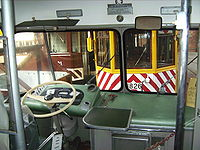
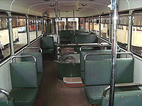
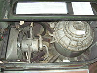
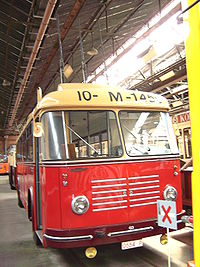

| Привод | маховик |
| Период | 1950 — 1960 годы |
| Скорость | 50-60 км/ч |
| Область применения | общественный транспорт в пределах города |
| Инфраструктура | контактная сеть (не обязательно непрерывная) |
Гиробус или жиробус (образовано от греческого корня gyros — круг, оборот и новолатинизма omnibus — омнибус) — особый вид автобуса, движущийся за счёт кинетической энергии вращающегося маховика. В настоящее время гиробусы не используются, хотя концепт гиробуса является объектом научно-технических изысканий.
Концепт автобуса, приводимого в движение маховиком, был разработан швейцарской фирмой Эрликон (Oerlikon) в 1940-х годах. Гиробус был разработан как альтернатива для аккумуляторных автобусов, которые задумывались как альтернатива троллейбусам на тех маршрутах, где строительство контактной сети не было оправдано.
Первые демонстрационные поездки гиробуса (с перевозкой пассажиров) состоялись в 1950 году. В течение ещё четырёх лет демонстрационные поездки устраивались в разных городах.
Полноценная коммерческая эксплуатация гиробуса началась в октябре 1953 года. Этот маршрут соединял швейцарские коммуны Ивердон-ле-Бан и Грандсон. Однако он имел ограниченный пассажиропоток, и в 1960 году движение гиробусов там было закрыто по экономическим причинам (хотя с технической точки зрения опыт применения гиробусов на этом маршруте был успешным). Ни один из использовавшихся на швейцарском маршруте гиробусов не сохранился, как не сохранился и опытный, демонстрационный экземпляр.
Вторая гиробусная система была открыта в Леопольдвиле (ныне Киншаса, тогда столица колонии Бельгийское Конго, ныне — Демократическая Республика Конго). В Конго в 1955 - 1956 годах использовалось двенадцать гиробусов (хотя некоторые источники ошибочно сообщают, что гиробусов было семнадцать), которые обслуживали четыре маршрута. Заправочные станции располагались через каждые два километра. Использовавшиеся в Киншасе гиробусы были самыми большими гиробусами из когда-либо существовавших: они имели 10,4 метров в длину, весили 10,9 тонн и вмещали до 90 пассажиров. Их максимальная скорость составляла 90 километров в час.
Однако гиробусы в Конго быстро изнашивались. Вполне вероятно, что это было связано с привычкой водителей «сокращать» маршрут по дорогам без покрытия, которые превращались в настоящие болота после дождя.
Другими проблемами были поломки подшипников маховика и высокая влажность, которая приводила к перегрузке мотора. Однако закрытие системы было вызвано высоким потреблением энергии. Фирма-эксплуататор сочла, что расход энергии слишком высок (он составлял 3,4 кВт·ч на километр для одного гиробуса). Движение гиробусов в Конго прекратилось летом 1959 года. Ставшие ненужными гиробусы были брошены ржаветь рядом с гаражом.

Место водителя гиробуса

Интерьер гиробуса
Третья и последняя гиробусная транспортная система имелась в Бельгии. Она состояла из одного маршрута (Gent Zuid-Merelbeke Molenhoek) и соединяла город Гент с его предместьем Мерелбеке. Эксплуатировало эту линию Национальное Общество Местных Железных Дорог (оно занималось эксплуатацией междугородных трамваев и автобусов). Подвижной состав состоял из трёх гиробусов, получивших обозначения G1, G2, G3. Для питания гиробусов использовалось напряжение в 380 вольт/50 герц. Гиробусное движение открылось 10 сентября 1956 года, однако просуществовало оно недолго, до 24 ноября 1959 года.
Имелось несколько причин прекращения использования гиробуса в Бельгии. Прежде всего он отличался высоким потреблением энергии — 2,9 кВт·ч/км, в то время как трамвай, перевозящий большее (в несколько раз) число пассажиров расходовал 2—2,4 кВт·ч энергии на километр пути. Кроме того, гиробусы были признаны ненадёжными, к тому же на «заправку» уходило непозволительно много времени. Ко всему прочему, из-за большого веса (из-за тяжёлого маховика) гиробус повреждал дороги. Один из гентских гиробусов, G3, был сохранён. Его иногда демонстрируют на различных выставках и других подобных мероприятиях. Сейчас этот гиробус хранится во Фламандском музее трамваев и автобусов в Антверпене.
Проектов эксплуатации в СССР было несколько. Все они относятся к 60-м годам ХХ века.
Несмотря на неудачи, развитие гиробуса не прекратилось полностью.
В 1979 году компания «Дженерал Электрик» (США) заключила с департаментом энергии правительства США четырёхлетний контракт (стоимостью в пять миллионов долларов) на развитие прототипа автобуса с маховиком.[1]
В 1980 году компания «Вольво» проводила эксперименты с маховиком, разгоняемым дизельным двигателем и используемым для рекуперации тормозной энергии. Впоследствии от этого проекта отказались в пользу гидравлических аккумуляторов.
В 2005 году Center for Transportation and the Environment (центр транспорта и окружающей среды), работая совместно с Университетом Техаса в Остине, Центром электромеханики (Center for Electromechanics), Test Devices, Inc., и DRS начал поиски спонсора для финансирования разработки прототипа нового гиробуса.[2]

Моторное отделение гиробуса. Справа виден трёхфазный двигатель, ниже него - картер маховика

Видны три поднятые заправочные штанги
Источником энергии для гиробуса является маховик (весом примерно в полторы тонны), который разгоняется до трёх тысяч оборотов в минуту электрическим двигателем. Электромотор, разгонявший маховик, получал энергию через три короткие штанги (мотор был трёхфазным), установленные на крыше гиробуса. Электродвигатель включался только эпизодически. Для этого вдоль маршрута следования гиробуса оборудовались «заправочные пункты» (обычно на некоторых остановках). На этих пунктах штанги гиробуса поднимались и прикасались к установленным над остановкой контактам трёхфазной электрической сети. После разгона маховика до нужных оборотов штанги опускались, двигатель выключался, и гиробус следовал до следующей «заправки».
Электромотор мог действовать и как генератор, таким образом энергия вращающегося маховика могла отдаваться обратно в сеть.
Гиробус имел электрические тормоза, при торможении производилась рекуперация энергии, что увеличивало радиус действия гиробуса.
«Заправка» гиробуса занимала от тридцати секунд до трёх минут. В целях уменьшения времени напряжение контактной сети было повышено с первоначальных 380 вольт до 500 вольт.
«Заправленный» гиробус мог проехать примерно шесть километров со скоростью в 50-60 км/ч.
«Дальним родственником» гиробуса является автомотриса (самоходный вагон) с маховиком. Такие автомотрисы разрабатывает компания Parry People Movers. Автомотрисы имеют и дизельный двигатель, и маховик. Маховик позволяет рекуперировать энергию без использования дорогостоящих электронных систем как на гибридных автомобилях, что делает такие автомотрисы дешёвыми и экономичными.
В 2008 году английская железнодорожная компания London Midland заказала две автомотрисы Parry People Movers для использования на железнодорожной линии Stourbridge Town Branch Line.[3]
Литература